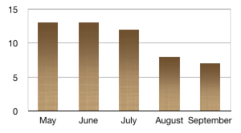

Citylights News
Heat wave linked to temperatures
02After three years of effort city scientists now agree that the primary cause of the 2003 heatwave was hot air from our air conditioning units. The study cost the city taxpayer under 10 million dollars
said Prof. Steve 'Call me Stephen' Wahoonie, of City University Public Expenditure on Science dept. We had five top statisticians working on it: one to write the grant proposal, one to do the mathematical modelling, two to collaborate on the research paper, and one to hire a student to do the job.
Tough Wahoonie
We soon realized that we were seeing a rise in temperatures every time a heatwave occurred. Also, the more air conditioning used, the bigger the heatwave. We knew it couldn't just be a coincidence, the match was 100%. Air conditioning was driving temperatures up, which in turn resulted in a heatwave,
the Prof. explained. It all comes from the way that air conditioning works06. Air conditioners produce cold air to go into the room but also hot air that's ducted away to the outside07. We are recommending a new city ordinance restricting use of air conditioning to winter months, when the heat will come in useful.
Return To Sender
When questioned whether their results would be affected if air conditioners were found to be used on cold days, Wahoonie responded: we had one guy in the lab whining those kinds of questions. 'Why are you doing this? Why are there all those discrepencies in the department accounts?', but it was after we had written up the results. We later found that he took 40% of his sick days on Mondays or Fridays. How convenient. Some people have no shame.
Man Gets Nine Months in Violin Case
As news of the conviction and sentencing of infamous violin thief Pasquale Ginkgo-Biloba reached city hall, Mayor Auberon 'Slim' Shadi stated that he was furious at the boring sentence handed down by the judge in the case, and is demanding a review of sentencing policy. This is not the first time that judges have come under fire for lenient sentencing in musical-instrument related cases. Last year's trombone forgery debacle also resulted in a formal rebuke from the Mayor.
Your Shout
05Well I think the Mayor's getting all heated up about nothing. Remember that 15 months is pretty much a lifetime to someone like me. But hey, I'm just a baby, and can't even vote, so you can ignore my opinion. And I can tell you that I'm standing for mayor on a ticket of infant suffrage
.
Clara F., 15 months, via email
04Lack of Brains Hinders Research
Brain donations at city hospital (by month)
09There has been a significant drop in brain donations as a result of the successful 'Slow Traffic, Safe Streets' policy, say city doctors. Brain donations are essential
said Dr. Liam Colluspid of Central Hospital, at a press conference yesterday. I must ask that the Mayor either dispenses with these road safety measures, or else that every concerned citizen should consider right now whether there are any brains they aren't making much use of at the moment, that they might like to drop off.